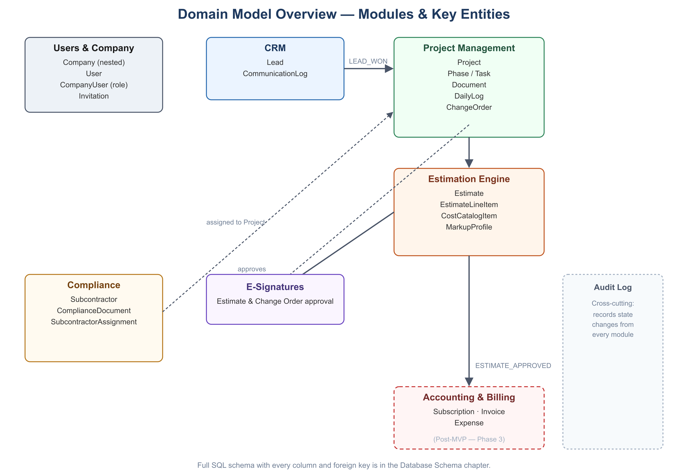

Know what’s next
Track every opportunity from the first conversation to a project your team can act on.
↗
FOR TEAMS THAT BUILD
Builders Stream connects your leads, projects, documents, estimates, and field updates—so your team can spend less time chasing information and more time moving work forward.
ONE PLACE. EVERY HANDOFF.
Growing construction companies outgrow spreadsheets, group texts, and disconnected tools quickly. Builders Stream gives the office and the jobsite one dependable source of truth.
THE BUILDERS STREAM WAY
Built around the work your team already does.
Track every opportunity from the first conversation to a project your team can act on.
Bring tasks, phases, documents, and daily progress into the same shared view.
Move estimates toward approval and give every role the information it needs.
A CONNECTED WORKFLOW
Every step keeps the next one moving. Capture the details, create the plan, keep the team in sync, and give customers confidence in what’s happening.
See how it works →
BUILT FOR THE WHOLE TEAM
READY FOR A CLEARER VIEW?
Join the early-access list and help shape a better way to run construction work.
Request early access →